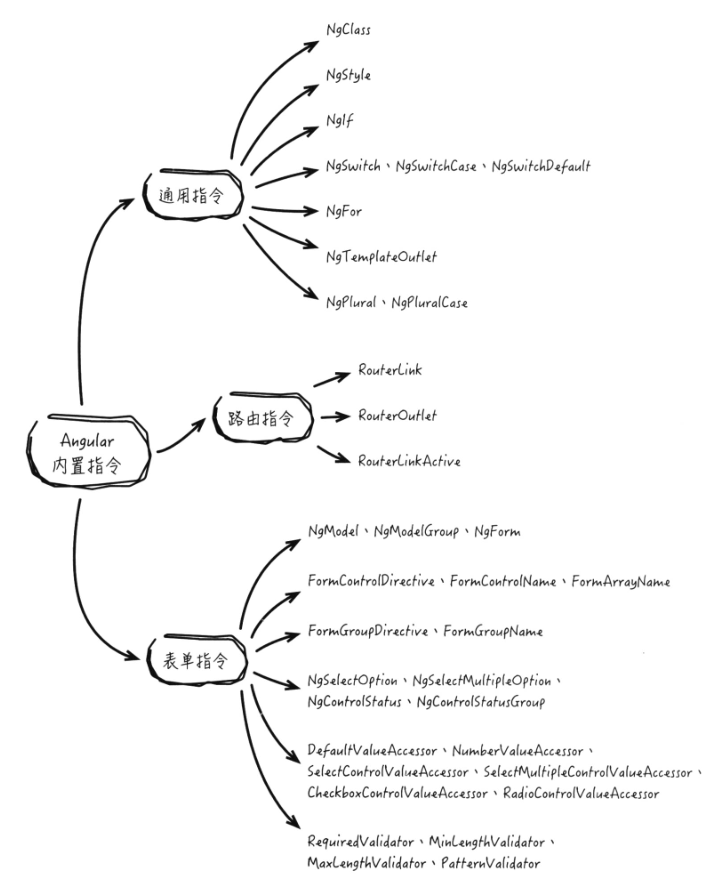

Angular2入门-指令
在Angular中，指令是一个重要的概念，它作用在特定的DOM元素上，可以扩展这个元素的功能，为元素增加新的行为。本质上，组件可以被理解为一种带有视图的指令，组件继承自指令，是指令的一个子类，通常被用来构造UI控件。
指令概览
Angular中指令的使用方式与HTML元素中属性的使用方式相似，不同的是，HTML语法标准为HTML元素预定了特定的属性，浏览器遵循标准实现了这些属性的内置行为。语法标准预定义的属性是有限的、不可扩展的，而Angular的指令是可自定义的，可任意扩展的，这在一定程度上弥补了标准HTML元素属性功能的不足。
指令分类
在Angular中包含三种类型的指令：
属性指令
属性指令，是以元素属性的形式来使用的指令，与HTML元素内置属性不同，指令是Angular对HTML元素属性的扩展，浏览器本身不能识别这种指令，指令仅在Angular环境中才能被识别使用，属性指令通常被用来改变元素的外观和行为，如Angular的内置指令NgStyle，它可以基于组件的状态来动态设置目标元素的样式。
结构指令
结构指令可以用来改变DOM树的结构，指令可以根据模板表达式的值，增加或删除DOM元素，从而改变DOM的布局，与属性指令的使用方式相同，都是以元素属性的形式来使用，两者的区别在于使用场景的不同，属性指令用来改变元素的外观和行为，而结构指令用来改变DOM树的结构。
如Angular内置结构指令NgIf，使用NgIf指令需要为指令绑定一个表达式，表达式值为true时，该DOM元素及其子元素被添加至DOM中，表达式值为false时，元素从DOM中被移除。
组件
组件是被用来构造带有自定义行为的可重用视图，组件与指令的结构类似，均使用装饰器描述元数据，二者均在各自对应的类中实现具体业务逻辑，最基本的组件和指令的结构示例：1
2
3
4
5
6
7
8
9
10
11
12
13
14
15
16// Component
({
selector: 'hello-world',
template: '<div>hello world</div>'
})
class HelloWorldComponent{
// ...
}
// Directive
({
selector: 'myHelloWorld'
})
class HelloWorldDirective{
// ...
}
可以看出，组件和指令的基本结构非常相似，差别在于组件中包含了模板，组件作为指令的一个子类，它的部分生命周期钩子与指令的相同。
组件和指令相同的钩子方法如下表：
| 钩子方法 | 作用 |
|---|---|
| ngOnInit | 在Angular完成初始化输入属性的数据绑定后，初始化指令/组件 |
| ngOnChanges | 在Angular初始化输入属性的数据绑定前响应一次，之后当检测到数据绑定发生变化后就会被调用，这个方法接收一个包含当前和之前数据的SimpleChanges对象 |
| ngDoCheck | 用于变化监测，该钩子方法会在每次变化监测发生时调用 |
| ngOnDestroy | 在Angular销毁指令/组件之前执行清理工作，此时应注销观察者对象或解绑事件处理器以避免内存泄漏 |
尽管组件和指令有相似的结构和一些相同的生命周期方法，但它们也有一些不同点，不同于属性指令和结构指令，组件不是以HTML元素属性的形式使用，而是以自定义标签的形式使用，原因在于组件带有模板。
组件可作为对HTML元素的扩展，将自身的模板视图插入至DOM中，而属性指令和结构指令是对HTML元素属性的扩展，作用是扩展已有DOM元素的行为和样式，或改变这些元素在DOM中的结构。
正因为指令中不仅有模板，因此在组件中，围绕模板视图的初始化和更新的生命周期钩子是组件独有而指令所没有的：
- ngAfterContentInit
- ngAfterContentChecked
- ngAfterViewInit
- ngAftetViewChecked
内置指令
Angular内置了一些常用的指令，根据这些指令使用场景的不同，可将其划分为3个类别：
- 通用指令
- 路由指令
- 表单指令

通用指令
在Angular应用中经常会用到的指令，Angular将通用指令包含在CommonModule模块中，当需要使用通用指令时，本应在模块中引入CommonModule模块，而Angular的BrowserModule模块已包含了CommonModule模块，所以引入BrowserModule后间接引入了CommonModule。
NgTemplateOutlet、NgPlural、NgPluralCase指令属于相对交生僻的指令，应用场景较少。
表单指令
表单指令包含了一系列在Angular表单中使用的指令，这些指令分别被包含在三个模块中：
- FormsModule
- ReactiveFormsModule
- InternalFormsSharedModule
FormsModule模块包含NgModel、NgModelGroup、NgForm指令和InternalFormsSharedModuel模块中包含的指令。
ReactiveFormsModule模块包含FormControlDirective、FormGroupDirective、FormControlName、FormGroupName、FormArrayName指令和InternalFormsSharedModuel模块中包含的指令。
InternalFormsSharedModuel模块是Angular的内部模块，在该模块包含的指令中，第一部分为表单元素访问器指令：
- DefaultValueAccessor
- NumberValueAccessor
- CheckboxControlValueAccessor
- RadioControlValueAccessor
- SelectControlValueAccessor、SelectMultipleControlValueAccessor
这些访问器指令是Angular表单的内部指令，在应用中无需主动使用，它们是DOM元素和表单输入控件之间的桥梁。
其中ControlValueAccessor是其他访问器指令的父接口，抽象了Angular控件与DOM元素交互的公共方法，ControlValueAccessor接口定义了3个方法：1
2
3
4
5export interface ControlValueAccessor{
writeValue(obj: any): void; // 向DOM元素写入新值的方法
registerOnChange(fn: any): void; // 用于监听DOM元素值变更的方法
registerOnTouched(fn: any): void; // 用于监听DOM元素触摸事件的方法
}
对应不同的数据输入类型，表单指令集合提供了各自的访问器类：
- DefaultValueAccessor为text文本输入框的访问器
- CheckboxControlValueAccessor为checkbox复选框的访问器
- RadioControlValueAccessor为radio单选框的访问器，RadioButtonState保存单选框的选中状态和选中的值
- NumberValueAccessor为number数字输入框的访问器
- SelectControlValueAccessor为select下拉框的访问器，NgSelectOption指令动态地标记option选项，选项变更时，Angular会收到通知
第二部分为选择框选项指令：
- NgSelectOption
- NgSlectMultipleOption
上述指令为Angular内部指令，它们动态地标记选择框的option选项
第三部分为表单验证指令：
- RequiredValidator指令为表单输入元素增加required约束
- MinLengthValidator指令为表单输入元素增加minlength约束
- MaxLengthValidator指令为表单输入元素增加maxlength约束
- PatternValidator指令为表单输入元素增加正则表达式约束，输入内容必须符合正则表达式定义的模式
最后一部分为控件状态指令：
- NgControlStatus
- NgControlStatusGroup
这些指令无需主动使用，是内部指令，会自动根据控件是否通过验证、是否被触摸等状态来设置元素的CSS类。
路由指令
路由指令中：
- RouterOutlet指令是一个占位符、路由跳转时，Angular会查找当前匹配的组件并将组件插入到RouterOutlet中
- RouterLinkActive指令在当前路径与元素设置的链接匹配时为元素添加CSS样式
- RouterLink指令使得应用可以链接到特定的组件
自定义属性指令
以自定义一个属性指令BeautifulBackgroundDirective为例，在单击按钮时改变其背景色
实现属性指令
一个属性指令需要一个控制器类，该控制器类使用@Directive装饰器来装饰，@Directive装饰器指定了用以标记指令所关联属性的选择器、控制器类则实现了指令所对应的特定行为。1
2
3
4
5
6
7
8
9
10
11// beautifulBackground.directive.ts
import { Directive, ElementRef } from '@angular/core';
({
selector: '[myBeautifulBackground]' // 此处的[]不可忽略
})
export class BeautifulBackgroundDirective{
construtctor(el: ElementRef){
el.nativeElement.style.backgroundColor = 'yellow';
}
}
Angular会为每一个匹配的DOM元素创建一个指令实例，同时将ElementRef作为参数注入到控制器构造函数。使用ElementRef服务，可以在代码中通过其nativeElement属性直接访问DOM元素，这样就可以通过DOM API设置元素的背景颜色。
使用自定义指令到组件中：1
2
3
4
5
6
7
8// app.component.ts
import { Component } from '@angular/core';
({
selector: 'my-app',
template: `<div myBeautifulBackground>按钮</div>`
})
export class AppComponent{ }
1 | // app.module.ts |
运行时，Angular会在组件div元素上解析到myBeautifulBackground属性，然后创建BeautifulBackgroundDirective指令类的实例，将元素的引用传入构造函数，用以设置元素的样式。
为指令绑定输入
作为自定义指令，为了增加灵活性，可以在指令外部使用绑定的方式设置背景色：1
<div [myBeautifulBackground]="color">按钮</div>
为了给指令绑定外部变量，需要为指令声明一个可绑定的输入属性backgroundColor，需要在属性上使用@Input装饰器，@Input标识使得属性具有绑定能力，可将外部变量的值绑定到指令的属性中。1
2
3
4
5
6
7
8
9// ...
({
selector: '[myBeautifulBackground]' // 此处的[]不可忽略
})
export class BeautifulBackgroundDirective{
('myBeautifulBackground')
backgroundColor: string;
// ...
}
上述@Input('myBeautifulBackground')装饰器中，为输入属性backgroundColor指定了myBeautifulBackground别名，这里指定的别名与指令在@Directive装饰器中定义的选择器名称一致，这不是必须的，之所以定义成一样的，是为了在元素中使用指令时，不必再使用另外的名称来绑定输入变量。若将别名定义为其他的，比如@Input('myBackgroundColor')，则需要在组件中绑定这个属性：1
<div myBeautifulBackground [myBackgroundColor]="color">按钮</div>
若在装饰器中不指定别名，即：1
2()
backgroundColor: string
则模板用法为：1
<div myBeautifulBackground [backgroundColor]="color">按钮</div>
以上的color变量可以来自多个地方，比如组件中定义的变量，或组件模板的输入元素等。1
2
3
4<input type="radio" name="colors" (click)="color='green'" /> 绿
<input type="radio" name="colors" (click)="color='red'" /> 红
<div [myBeautifulBackground]="color">按钮</div>
同时，为了在输入属性backgroundColor的值变更时响应改变元素样式，可以将backgroundColor属性用set方法重写：1
2
3
4
5
6
7
8
9
10
11
12
13
14
15
16
17
18
19
20
21
22
23import { Directive, ElementRef, Input } from '@angular/core';
({
selector: '[myBeautifulBackground]' // 此处的[]不可忽略
})
export class BeautifulBackgroundDirective{
private _defaultColor = 'yellow';
private el: HTMLElement;
// 重写backgroundColor属性的set方法
('myBeautifulBackground') set backgroundColor(colorName: string){
this.setStyle(colorName);
}
construtctor(el: ElementRef){
this.el = el.nativeElement;
this.setStyle(_defaultColor);
}
private setStyle(color: string){
this.el.style.backgroundColor = color;
}
}
响应用户操作
在为指令绑定了输入属性后，可以根据输入值动态地变更元素样式。
为了实现用户单击按钮时改变元素的样式，需要在事件处理函数上添加@HostListener装饰器。
@HostListener装饰器指向使用属性指令的DOM元素，使得DOM元素的事件与指令关联起来，除此外，可以直接为DOM元素添加事件监听器，但不建议这样做，因为有如下3个问题：
- 必须正确编写监听器
- 必须在指令销毁前移除监听器，避免内存泄漏
- 会直接操作DOM API，这是应该避免的
因此，才会需要使用@HostListener装饰器来实现这个事件处理函数：1
2
3
4
5
6// ...
('click')
onClick(){
this.setStyle(this.backgroundColor || this._defaultColor);
}
// ...
这样就可以根据用户操作来改变元素样式了，而不是在输入属性变更时触发样式更新.用户点击元素时，可以根据绑定的输入属性的值。
修改后的指令代码：1
2
3
4
5
6
7
8
9
10
11
12
13
14
15
16
17
18
19
20
21
22
23
24
25
26
27
28import { Directive, ElementRef, Input } from '@angular/core';
({
selector: '[myBeautifulBackground]' // 此处的[]不可忽略
})
export class BeautifulBackgroundDirective{
private _defaultColor = 'yellow';
private el: HTMLElement;
// 重写backgroundColor属性的set方法
('myBeautifulBackground') set backgroundColor(colorName: string){
this.setStyle(colorName);
}
construtctor(el: ElementRef){
this.el = el.nativeElement;
this.setStyle(_defaultColor);
}
('click')
onClick(){
this.setStyle(this.backgroundColor || this._defaultColor);
}
private setStyle(color: string){
this.el.style.backgroundColor = color;
}
}
当使用<div [myBeautifulBackground]="'red'">按钮</div>模板后，初始时，div的背景色是黄色，点击div后，颜色为红色。
自定义结构指令
以实现一个和NgIf指令作用相反的Unless指令为例，当表达式值为false时渲染模板内容，为true时将移除模板内容。
实现结构指令
与自定义属性指令类似，创建自定义结构指令涉及如下内容：
- 引入@Directive装饰器
- 添加CSS属性选择器，用来标识指令
- 声明一个input属性用以绑定表达式
- 将装饰器应用在指令实现类上
初始内容如下：1
2
3
4
5
6import { Directive, Input } from '@angular/core';
({selector: '[myUnless]'})
export class UnlessDirective{
('myUnless') condition: boolean;
}
Unless指令需要访问组件模板内容，并且需要可以渲染组件模板内容的工具，通过使用TemplateRef和ViewContainerRef服务实现，TemplateRef用来访问组件的模板，而ViewContainerRef作为视图内容渲染器，将模板内容插入到DOM中，TemplateRef和ViewContainerRef服务来自@angular/core,在指令的构造函数中，需要将它们作为依赖注入，赋值给指令的变量。1
2
3
4
5
6//...
constructor(
private templateRef: TemplateRef<any>,
private viewContainer: ViewContainerRef
){}
//...
在组件中使用Unless指令时，需要为指令绑定一个值为布尔类型的表达式或变量，指令根据绑定结果增加或删除模板内容，为了在接收到绑定结果时实现这一逻辑，需要为condition属性设置一个set方法：1
2
3
4
5
6
7
8('myUnless')
set condition(newCondition: boolean){
if(!newCondition){
this.viewContainer.createEmbeddedView(this.templateRef);
}else{
this.viewContainer.clear();
}
}
通过调用渲染器的createEmbeddedView()方法和clear()方法，实现根据输入属性的值、添加和删除模板内容。
最终Unless指令的代码如下：1
2
3
4
5
6
7
8
9
10
11
12
13
14
15
16
17
18
19import { Directive, Input, TemplateRef, ViewContainerRef } from '@angular/core';
({selector: '[myUnless]'})
export class UnlessDirective{
('myUnless')
set condition(newCondition: boolean){
if(!newCondition){
this.viewContainer.createEmbeddedView(this.templateRef);
}else{
this.viewContainer.clear();
}
}
constructor(
private templateRef: TemplateRef<any>,
private viewContainer: ViewContainerRef
){}
}
在组件的模板中使用Unless指令：1
2
3<p *myUnless="boolValue"> myUnless的值是false</p>
<p *myUnless="!boolValue"> myUnless的值是true</p>
模板标签与星号前缀
前面实现的Unless自定义结构指令，并未涉及模板标签（<template>）和星号前缀（*）.
模板标签
结构指令在将模板内容从DOM树中添加和移除时，使用了HTML5新增的<template>标签。
在<template>中定义的内容，默认的CSS样式display属性为none，<template>标签中定义的脚本代码不会被执行，图片不会被加载，标签中的元素也不能被类似getElementById()方法访问。
在普通的HTML代码中使用<template>标签，通过Chrome开发者工具可以查看生成的DOM树，在HTML页面中，<template>标签内容被#document-fragment包装。
而在Angular中，<template>标签和内容被移除，在<template>标签处仅留下一行注释
星号前缀
在Unless指令前，有一个星号前缀，星号是使用结构指令的语法糖，使用星号前缀可以简化对结构指令的使用，Angular会将带有星号的指令引用替换成带有<template>标签的代码，对比用星号前缀和<template>标签方式来使用Unless指令。1
2
3
4
5
6
7<!-- 使用星号方式 -->
<p *myUnless="condition"> *星号方式中的myUnless, condition为false</p>
<!-- 使用`<template>`标签方式 -->
<template [myUnless]="condition">
<p> template标签中的myUnless, condition为false</p>
</template>
上述两种方式效果一样，Angular会将使用星号前缀的方式转换成<template>标签方式，并做一些如指令、属性绑定的特殊处理。
比如NgFor的使用，其实也是这样：1
2
3
4
5
6
7<!-- 使用星号方式 -->
<p *ngFor="let contact of contacts">{{ contact }}</p>
<!-- 使用`<template>`标签方式 -->
<template ngFor let-contact [ngForOf]="contacts">
<p>{{ contact }}</p>
</template>
在上述代码标签的使用中，ngFor是指令的选择器，[ngForOf]绑定指令的输入属性，即将contacts集合绑定给[ngForOf]作为指令的输入，let-contact创建了一个模板局部变量contact。
NgIf指令原理
在Web中，可以将display设置为none来隐藏目标元素，虽然这些元素不可见但仍然保存在DOM中，这样的好处是若元素不久就需要再次显示，组件不需要重新被初始化，组件的状态因为之前被保留所以可以马上显示。
但在Angular应用里，问题是若隐藏一个元素，但它仍然暴露在DOM树中，Angular会继续检查那些可能发生变化的数据绑定，组件的所有行为将会保持，这种情况下，组件及其所有的子节点仍然会占用资源，消耗更多的内存，从而影响性能。
使用NgStyle指令可以通过改变样式将元素隐藏，当在组件中使用NgStyle指令进行如下设置时，可以将组件在DOM树中隐藏：1
<div [ngStyle]="{'display':'none'}">display none</div>
NgIf指令的不是通过样式隐藏的，与Unless一样，根据输入变量布尔值，其值为false时元素从DOM中移除，停止监测相关组件绑定的属性是否有变化，释放它的DOM事件监听器并且销毁组件，组件将会被垃圾回收且释放内存。
NgIf的实现如下：1
2
3
4
5
6
7
8
9
10
11
12
13
14
15
16
17
18
19
20
21
22import { Directive, Input, TemplateRef, ViewContainerRef } from '@angular/core';
import { isBlank } from '../facade/lang';
({selector: '[ngIf]', inputs: ['ngIf']})
export class NgIf{
private _prevCondition: boolean = null;
constructor(
private _templateRef: TemplateRef<Object>,
private _viewContainer: ViewContainerRef
){}
set ngIf(newCondition: any /* boolean */){
if(newCondition && (isBlank(this._prevCondition) || !this._prevCondition)){
this._prevCondition = true;
this._viewContainer.createEmbeddedView(this._templateRef);
}else if(!newCondition && (isBlank(this._prevCondition) || this._prevCondition)){
this._prevCondition = false;
this.viewContainer.clear();
}
}
}
在Unless指令中，指令通过@Input()装饰器绑定了输入属性，而在NgIf中，以键值对形式为inputs元数据赋值，效果是一致的。
在NgIf的@Directive装饰器有两个键值对，selector属性为[ngIf],然后将inputs属性赋值为[ngIf],为指令绑定一个输入属性，它的值和指令选择器的值相同。
虽然NgIf和Unless指令的实现代码很相似，但不同于Unless，在NgIf中设置的_prevCondition变量用于记录上次表达式的值，并在自定义输入属性的set()方法中，对_prevCondition变量做变更检查，这样在每次输入属性变更时，可以避免不必要的操作，从而提高性能。